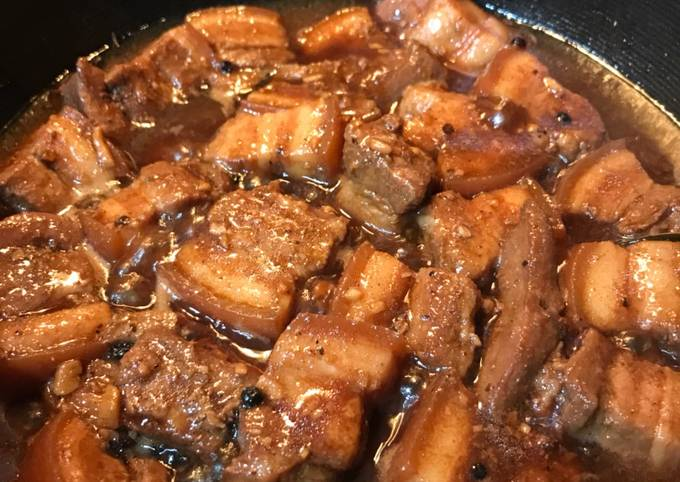

Pork Adobo
Pork Adobo is a quintessential dish in Filipino cuisine, celebrated for its bold flavors and simplicity. It embodies the essence of Filipino cooking, where the harmony of ingredients and cooking methods creates a rich, satisfying meal.
Adobo's roots can be traced back to the Spanish colonial period, where the term "adobo" referred to a method of marinating and preserving food. Over time, it evolved into a uniquely Filipino dish, with each region adding its own twist. It's often considered the unofficial national dish of the Philippines and is a staple at family gatherings, fiestas, and everyday meals.


How to cook Pork Adobo
Ingredients
Pork: Cuts like belly, shoulder, or ribs are commonly used due to their richness and ability to absorb flavors.
Vinegar: This is the defining ingredient that provides the dish's signature tanginess. Cane vinegar is often preferred, but other types can be used.
Soy Sauce: Adds a savory depth and umami flavor to the dish.
Garlic: Fresh garlic cloves, either minced or whole, are essential for that aromatic quality.
Bay Leaves: These add an earthy note and complexity to the flavor profile.
Black Peppercorns: Whole peppercorns contribute a subtle heat.
Steps:
1. Marination: The pork is often marinated in a mixture of vinegar, soy sauce, garlic, and spices to enhance its flavor.
2. Browning: The marinated pork is then seared in a pan to create a flavorful crust.
3. Simmering: After browning, the pork is simmered in the marinade until it becomes tender. The cooking process allows the flavors to meld together beautifully, with the vinegar's acidity balancing the richness of the pork.
4. Reduction: The sauce is often reduced to create a thicker consistency, resulting in a savory glaze that clings to the meat.